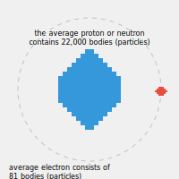

Chapter 7: The Structure of An Atom
ATOMIC STRUCTURE
We will begin this discussion of atomic structure by considering what constitutes an electrical charge. If we observed a balanced atom we would find it had no charge, yet if we removed particles (electrons) from that balanced atom it would result in that atom now having a positive charge. If we were instead to add electrons to that balanced atom, it would result in that atom now showing a negative charge. Therefore, an electrical charge (negative or positive) is the result of adding or subtracting particles from an atom. Since all falling bodies follow the same laws of nature (be that body subatomic, atomic, universal, or anything in between) It is clear that a single particle cannot carry an electrical charge. When members of the scientific community extract so called particles with the aid of their accelerators and confidently proclaim these "particles" to be either negative, positive, or neutral in value, they have either confused their terminology, or have confused the issue, we're not sure which, but regardless, the fact remains that these charged "particles" are in reality systems of particles. If they weren't, they wouldn't be capable of carrying any charge whatsoever.
Basic high school science courses teach that an electron is a very small particle which has a negative charge, but this is incorrect. What is perceived as an electron is actually a system of particles. It is perceived as carrying a negative charge due to its very small size relative to the nucleus it orbits. The bubble of extracted energy which surrounds an electron system is smaller than the bubble generated by the atomic nucleus, and so can be said to be negative in respect to the nucleus.
The same proves true when dealing with "particles" from the nucleus of an atom. For example, scientists "smash" a nucleus and excitedly announce they've found mesons, which are supposedly particles similar to an electron except that they can carry negative, positive, or neutral charges, and are various sizes. Again, what they have found are not single particles, but are systems of particles. To our knowledge, science has yet to identify a single particle, and who could say If anyone would recognize it even if they did find one.
Unity dictates that all bodies and systems follow the same basic rules, and so the arrangement and inner workings of subatomic systems can be compared to the falling body of our solar system. Our purpose is always to allow the reader to gain an understanding of physical law, so for the sake of clarity we will draw analogies between subatomic systems and our solar system, and will now focus attention on a simple electron system, which is comparable to the planet Mercury
Mercury
.
When looking at Mercury we see its rotation and orbit are very fast compared to the more distant planets. Orbiting Mercury are small chunks of debris which are too small to be classified as moons per se, however, they perform the same function and serve to balance the system. A simple electron system behaves in much the same way in that its orbit and rotation are faster than more distant electron systems, while its size and the sizes of its orbiting bodies are also smaller than more distant electron systems. It must be remembered that each system of particles, no matter how simple or complex, produces a force of extracted energy that creates a gravitational field (bubble) which draws all particles (bodies) within its field toward its center. At the same time, the orbiting particles (bodies) generate their own fields (bubbles) which in turn repels the primary gravitational field through which they fall. A simple electron system is illustrated in figure 29.
![Diagram of two circles, one within the other. The smaller circle has a diameter of about 1 cm. The outer circle is about 6cm in diameter. Contained in the larger circle at approx the 11 o'clock and the 5 o'clock position two smaller circles (about 0.5 cm diam.) are drawn respectively. Within each smaller circle is a dot in the middle. Arrows protruding out from these smaller 0.5 cm circles indicate they are travelling counter clockwise. The 1 cm, and both DOTS inside the 0.5 cm circles are labelled 'Particles'. The outer circle is labelled 'Electron'. The 0.5 cm circles and the outer 6cm circle are labelled 'Bubbles'.](./img/fig29.jpg)
Fig. 29
We could break this simple system down yet further, but at this time It would likely just cause confusion to the reader unnecessarily. For now it is enough if we've managed to explain two major points. First, the sun is not in the process of burning out, as is currently taught, but rather is continually building mass, and is therefore growing larger every day. Secondly, it should be realized that these hydrogen implosions are nature's way of attempting to replace imbalance with balance, and so in a very limited sense, hydrogen fusion is a thing of nature.
A complex electron system could be likened to the planet Jupiter with its many moons. A complex electron system, as shown in figure 30, is slower in both its rotation and its orbit as compared with a simple electron system, and will be found in the outermost orbits of the atom. Regardless of these differences, however, it operates on the same principles of attraction/repulsion as does a simple electron system, or any other system.

Fig. 30
We haven't undertaken to name any of these particles, as it would be a vain exercise. The particles found in an electron system are the same type of bodies found in neutrons and protons, as will be seen in the next section. They differ in size and in their orbits, as do the planets in our solar system, but they all maintain their orbits due to the same Interaction between the attraction/repulsion of their respective gravitational fields.
THE NUCLEUS
In its simplest form the average electron consists of 81 bodies
The average electron consists of 81 bodies (particles) while the average proton or neutron contains 22,000 bodies (particles).

illustration: Jen Brannstrom
(particles) while the average proton or neutron contains 22,000 bodies (particles). Each proton or neutron contains their own nucleus, and the bodies which orbit this nucleus are systems of particles, ie., complete (but very small) electron systems
please wait until the illustration fully loads

illustration by the editors
. In turn, each nucleus of a proton or a neutron also consists of many systems of particles. The systems of the nucleus will become more clear when we begin our discussion of our solar system nucleus, the sun. Since it's very difficult to diagram such a complex system without computer aid, we ask that the reader visualize our solar system as one large proton (or neutron), and let the sun serve as a model for the proton nucleus. Don't let this seeming contradiction confuse you, the proton nucleus is not a single body and neither is the sun, rather, it is a multi bodied system, but more of that later on. Orbiting the proton in the same way as the planets orbit the sun are systems of bodies, some simple as the systems of the minor planets, and some more complex, as are the systems of the major planets (Jupiter, Saturn, etc.). It must be remembered that orbiting around all of the moons of the planets, especially those of the major planets, are chunks of debris which in turn balance each moon into separate balanced systems, and orbiting these chunks of debris are rocks and smaller pieces of debris which in turn balance these mini systems, and so on. This is admittedly a very sketchy description of a proton (neutron), but all of the systems in nature are so very repetitious that there seems to be little point in weighing down this paper and risking boring the reader with constant repetitions. Suffice it to say that if the reader can in their mind visualize systems of particles orbiting larger systems, which in turn orbit yet larger systems (and so on and so on) all orbiting a central nucleus which is but another system of systems, they will have a fair understanding of the structure of the "simple" proton (or neutron). All of these systems exist and are in motion, undetected, within the gravitational field of the proton/neutron.
As we have already strongly implied, the structure of a neutron is identical to that of a proton except for the presence of one major system of particles. As discussed earlier, an electrical charge is created by either adding or subtracting particles from an atom, and the same is true for the mini atoms which are called protons and neutrons. The neutron is analogous to a balanced atom, and is neutral in value. The proton carries a positive charge because it is missing a system of particles which would allow it to balance. On the outermost edge of the bubble (i.e.: the mew) which surrounds the neutron orbits a relatively large, slow moving system of particles which serve to balance the neutron, allowing it a neutral charge. This system, which we refer to as the jipsee system, not only determines whether a nucleus system will be a neutron or a proton, but is also largely responsible for the structuring of an atom. The jipsee is able to pass readily from a neutron to a proton due to its low velocity and distant orbit and it does so regularly, in an attempt to electrically neutralize (balance) a proton system. When it moves from a neutron to a proton it. succeeds in balancing the proton system by "changing" it into a neutron system, but in the process leaves its former system with a lack of balance and a positive charge. It is the continuous cycle of the jipsee which tends to hold the proton and neutron systems together in the atomic nucleus, and indeed, it is the counterpart of this jipsee system which, on a larger scale, holds the key to the creation of elements, but a detailed explanation of this is beyond the scope of this paper and will be dealt with in the future.
In continuing the discussion of the subatomic realm we would point out that all systems within an atom (and all atoms) display an isotopic effect, however, the instability varies with each system some exhibit a strong isotopic effect while in other systems it is hardly detectable, ie. the lack of stability is a matter of degree. The highly isotopic system stabilizes itself by interfacing with other isotopic systems. It is the jipsee system which once again travels from system to system attempting to create a balance. In extremely unstable systems the jipsee is in constant and rapid interchange, and it is this continuous and rapid movement of the jipsee between other systems which holds the various systems together as a unit. For clarity, always bear in mind that these jipsies can be any size, and so perform their balancing act on every level from the smallest possible subatomic system to the galactic level systems.
The subatomic/atomic jipsee system has another interesting effect when we consider a true wanderer, ie., a non-aligned system not in orbit around a larger system of bodies. It is a stable system, and could be visualized as an autonomous micro-atom - it is truly a free agent. Like all falling bodies it is in motion at a given velocity, and has an energy exchange which determines pole values. When, in its travels it encounters a slower moving system (or group of systems) the interaction between the pole placements of the respective systems, coupled with the interaction of the attractive/repulsive forces of the jipsee system and system x, can and often does affect the degree of tilt experienced by the bodies and/or systems functioning within the jipsee and/or system x. Depending upon the exact circumstances of the encounter (i.e.: the respective sizes, velocities, direction of motion, pole positions, etc., etc.,) the result could range from a mild shock to one or both systems, to a major upheaval of both systems there are literally thousands of possible scenarios . These free agent jipsee systems have their counterpart on the galactic level, so we will explore some of the possible scenarios more fully in the supplement dealing with the workings of the sun and the solar system, which will follow in the near future. In this discussion, however, without the aid of computer graphics, there is little point in attempting to illustrate the "average" encounter at the atomic/subatomic level. Indeed, though the many actions of this particular system of particles are fascinating in the vital functions they perform, we included it in this highly condensed paper primarily to introduce the reader to the concept, and because it is important to the discussion of why some elements can be magnetized while others cannot, and why some elements are radioactive.
A brief sketch is all the explanation this paper will allow, but even this should allow the reader to begin to visualize the actions of the jipsee in the subatomic world. Once a foundation of logic is established, our elaboration on the subject in a supplement to follow will be more quickly and easily comprehended.
We'll begin with a short explanation of radioactivity, which is not caused by the weak nuclear force, that enigmatic force which no one can seem to define. Rather, it is caused by the actions of the jipsee systems, which in their never ending effort to create balanced systems, actually throw out particles from highly unstable systems. This free agent, the jipsee, moves around the systems of the unstable atom, and repulses unstable systems with such a force that the atom is perceived to be "shedding" its systems. In fact, the actions of the jipsee in this high velocity atom are so energetic that it in effect tosses these systems out of the gravitational field of the atom. Any system or system of systems (atoms) can be made radioactive if their functions and normal balances are disrupted. Once a disruption has occurred, the jipsee systems quickly begin to throw out the chaotic systems, and the atom is now potentially lethal because it is emitting the very same particles and systems which are released through the walls of the containment vessels. For the time being, this abbreviated explanation will have to suffice.
Now we will briefly discuss magnetism, and will consider the element iron. Due to the great strength of the repulsive forces generated by the many systems within an atom of iron, it is unaffected by the jipsee systems, and in fact this is a case where it is the jipsee system only which experiences disruptions and upheavals in the close encounter. Because of this strong repulsive force (the many reasons for which will be explained in detail in the future) and the relatively unique, symmetrical arrangement of the systems contained in all iron atoms, and the resulting symmetry of the atoms themselves, a current passing through the atom will experience an additive effect. The arrangement of some of the systems in a hypothetical atom of iron are illustrated in figure 31.
![Fig 31. Two diagrams: one labelled "Pole position - top view", the other "Pole position - side view".
"Pole position - top view" diagram: is two circles, one within the other. The smaller circle has a diameter of about 1 cm. The outer circle is about 6cm in diameter. Centre circle has "N" written in the middle. Strewn around, outside the smaller circle , but contained within the large circle are 14 smaller circles, of 0.5 cm diam. Each one of the 14 has "N" written on it and an arrow circling it pointing counter-clockwise.
"Pole position - side view" diagram: a series of circles, equally spaced horizontally, all on the same horizontal plane. There are 11 circles, with the middle one being double the size of the other 10. Through all the circles is a line from 12 o'clock to 6 o'clock. At the 12 o'clock is written "N"; at the 6 o'clock it says "S".](./img/fig31.jpg)
Fig. 31
In an element such as gold, the repulsive forces of the various systems within the atom are relatively weak (as compared to iron) and so the jipsee systems have a great effect on these systems, and regularly alter their degree of tilt as they encounter these systems in their travels. A hypothetical and greatly simplified atom of gold is illustrated below.

Fig. 32
When a current is introduced to the element iron, all of the systems "flip" over, but as can be seen in figure 31, they will still be arranged symmetrically in respect to each other, and so an additive effect is experienced. When the systems in the element gold "flip", however, they remain, in effect, asymmetrical in respect to the other systems within that atom of gold, and so do not experience the additive effect when current is applied. We could go into very fine details on this subject, but it is the consensus of our research team that this Is not the most vital subject matter at this time. In fact, with the severe problems faced by our planet and its inhabitants today, magnetism seems almost trivial, and so will be expanded on in the future, after the more vital subjects have been fully addressed.
SUMMARY
Particle physicists detect only the bubble of the electron system and believe it to be a single particle/ but in fact/ a single complex electron system contains eighty-one single particles/ and so it's easy to see why our modern physicists are in constant and confused disagreement with each other. This confusion among the scientific community is perhaps the most difficult problem we've had to overcome in formulating unity. A classic example of this confusion is the application of the mechanics of quantum physics/ wherein an electron traveling at a velocity beyond the speed of light is seen as a photon of energy and is called a Betaray. Other areas of applied theoretical mathematics view the electron as a solid particle. This is confusing because both applications are correct/ but they have attached different names to the same unit. Just trying to sort out this type of jumbled terminology so that we could evaluate their test results was a momentous task, but when we did, it became very clear that they were dealing with the same unit at different velocities. Apply the equation G \= MV2 and you will quickly see that an electron system traveling at the velocity of light or beyond becomes what is seen as a photon/ while an electron system traveling at velocities less than that of light becomes what is seen as a solid particle. The unity equation is valid for all bodies/ and it's not complex/ once we recognize that there is much confusion in the current community of scientists. We must rely on the facts/ and forget all of this fancy guesswork before we "guess" our way into oblivion.